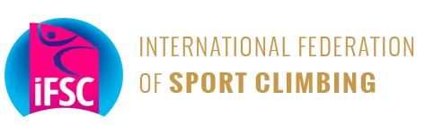
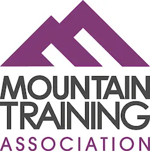

What Is Organization
A mountaineering organization is a passionate group dedicated to exploring and preserving mountainous regions.
They
promote mountaineering, ensure safety, and organize expeditions, training, and awareness campaigns. These
organizations educate climbers, emphasize responsible climbing and environmental conservation, fostering a
supportive
community for thrilling adventures while respecting nature and local cultures.
Alpine Club Of Pakistan (ACP)
The Alpine Club of Pakistan, established in 1979 and headquartered in Islamabad, is a prominent non-governmental
sports organization dedicated to the promotion of mountaineering, climbing, and other mountain-related adventure
activities in the country. Serving as the national sports governing body for mountaineering and climbing in
Pakistan, the club plays a pivotal role in fostering a passion for outdoor pursuits among enthusiasts. Led by
President Abu Zafar Sadiq and Secretary Karrar Haidri, the organization is affiliated with international bodies
such as the International Climbing and Mountaineering Federation and the International Federation of Sport
Climbing. Through its initiatives and affiliations, the Alpine Club of Pakistan continues to contribute
significantly to the development and popularity of mountaineering and climbing sports in the region.
Pakistan Youth Outreach Foundation(PYOF)
Pakistan Youth Outreach, founded by Mirza Ali in 2010, is a non-profit organization dedicated to empowering the
youth of Pakistan through outdoor adventure and mountaineering activities. Their mission is to inspire and
educate
young individuals about the value of engaging in physically challenging pursuits while fostering an appreciation
for Pakistan's natural beauty. Notably, they've undertaken initiatives such as the "7 Summits" project, where
young Pakistani climbers aim to conquer the highest peaks on each continent, including Mount Everest, not only
achieving mountaineering milestones but also showcasing a positive image of Pakistan on the global stage. For
the
latest information about their history and ongoing initiatives, it is advisable to visit their official website
or
directly contact the organization.
UIAA
The International Climbing and Mountaineering Federation (UIAA) was founded in 1932 to promote and protect
mountaineering and climbing interests around the world. These days, the UIAA represents over 90 member
associations and federations within 68 different countries on 6 continents, giving it a global presence in the
international climbing community.
One of the main focuses of the UIAA is to uphold safety and technical standards for climbing equipment.
Developed in the 1960s, the UIAA Safety Label is given to equipment that meets the testing requirements for a
particular type of gear. The UIAA stringently tests a wide variety of gear to help ensure that only quality
equipment is used in the mountains.
International Federation of Sport Climbing(IFSC)

The International Federation of Sport Climbing (IFSC) is the preeminent governing body for competitive climbing.
Established in 2007, it holds the distinction of being recognized as an Olympic Sport Federation. Operating as
an
umbrella organization, the IFSC encompasses member climbing federations from nations spanning six continents.
Its
primary mission revolves around the regulation, promotion, and advancement of competition climbing both at local
and global levels. With authority over international sport climbing competitions, including World Cup events,
the
IFSC has assumed the responsibility of organizing Olympic Qualification events for climbers worldwide, in line
with climbing's inclusion in the 2020 Olympic Games program.
Mountaineering Scotland
Mountaineering Scotland, formerly known as the Mountaineering Council of Scotland, serves as the national
representative body for Scotland's climbing, mountaineering, hill walking, and snowsports community. With a
membership exceeding 14,000 individuals, its core mission revolves around the promotion of responsible
engagement
in mountain activities. Offering individual memberships, Mountaineering Scotland provides access to a diverse
range of benefits, including discounts on outdoor gear, magazine subscriptions, subsidized mountain skill
courses,
liability insurance coverage, and access to mountaineering huts. The organization is actively involved in
fostering accessible training opportunities for both novice and experienced mountaineers, with programs
conducted
at various locations across the country.
Mountain Training Association (MTA)

The Mountain Training Association (MTA) is a collective body comprising the national governing bodies for
mountaineering across the United Kingdom and Ireland. This organization holds responsibility for the
administration of certifications in hill walking, climbing, and mountaineering within these two regions, making
it
the primary resource for individuals seeking information and training to pursue a career in the outdoors.
Membership with the MTA or one of its affiliated member organizations provides individuals with access to a wide
range of training programs. These include qualifications such as the Mountain Leader (ML), International
Mountain
Leader (IML), Rock Climbing Instructor (RCI), and Mountaineering and Climbing Instructor. Additionally, the MTA
publishes various handbooks and guides aimed at assisting climbers in enhancing their skills and expertise.